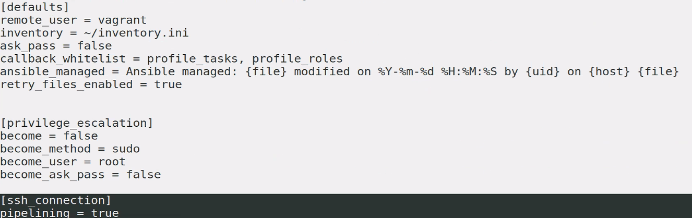

10. 암호화
10.1
1) 단일 볼트 패스워드
10.2 파일 수준 암호화 관리
1) 암호화 된 파일 생성
생성
ansible-vault create encrypt.yaml New Vault password: Confirm New Vault password: $ ls encrypt.yaml파일 내용 쓰고서 보면 aes256 으로 암호화된 것을 볼수 있음
$ cat encrypt.yaml $ANSIBLE_VAULT;1.1;AES256 36653234326666363436646233343936366536633064393535386438646430643863383435636166 6264663336366162336436653934303864626363323264320a386364363630656265373333643963 34353139633337346432343639616364613066653665373466653763643438613730323361376639 6338396632636635370a393861646265366131643437653862336438323763323831353663646332 32353864303364633634343163656534623163316435353663653266663537316431수정 하기
$ ansible-vault edit encrypt.yaml Vault password:암호 풀기 ```shell $ ansible-vault decrypt encrypt.yaml Vault password: Decryption successful $ ls encrypt.yaml $ cat encrypt.yaml
hosts: 192.168.200.101 ```
암호화된 yaml 파일 실행 ```shell $ ansible-playbook encrypt.yaml --ask-vault-pass Vault password:
PLAY [192.168.200.101] *
TASK [Gathering Facts] * ok: [192.168.200.101]
PLAY RECAP * 192.168.200.101 : ok=1 changed=0 unreachable=0 failed=0 skipped=0 rescued=0 ignored=0
* 패스워드 변경
```shell
$ ansible-vault rekey encrypt.yaml
Vault password:
New Vault password:
Confirm New Vault password:
Rekey successful
- 패스워드가 저장되어 있는 파일 지정하기
echo "pass123" > vpass ansible-playbook encrypt.yaml --vault-password-file vpass
보안상 좋은 방법 아님
- ansible.cfg 에다가 참조할 비밀번호 적어놓으면.. 인크립트 안해도 쓸 수 있음
[defaults] vault_password_file = vpass inventory = inventory - inventory
192.168.200.1 - encrypt 파일 생성 (비밀번호: pass123)
ansible-vault create encrypt.yaml - vpass
pass123 - Run
ansible-playbook encrypt.yaml
10.3 가변 수준 암호화
파일 전체가 아닌 일부만 암호화 할 수 있다.
ansible-vault encrypt_string --vault-password-file vault_pass 'foobar' --name the_secret 'abc'
- vi valut_exec.yaml ```yaml
hosts: 192.168.200.101 var_files: vars.yaml vars: the_secret: !valt |
193808108394718381092489018908091839082904819080184098309819481038378957283794 325029375825823847284729882374827857294829859289482094820482385925728578782758 847925788572384234792829823492492872834028948058294892384275874190810489014894tasks:
- debug: msg: "" ```
실습
~/test/vault 폴더에서 실습
cd test/vault/
echo "P@ssw0rd" > passdev
echo "123" > passprod
chmod 400 passdev passprod
vi valut_exec.yml
ansible-vault create taskdev.yml --vault-password-file=passdev
vi taskdev.yaml
ansible-vault create taskprod.yml --vault-password-file=passprod
ansible-playbook valut_exec.yml --vault-password-file=passprod --vault-password-file=passdev
--vault-password-file 이거 옵션 원래 여러개 안 됐었는데 사용자들의 원성으로 --vault-id 생겼고 그 이후에 file에도 적용
- test.yml ```yaml
hosts: 192.168.200.101 tasks:
- import_tasks: taskdev.yml
- import_tasks: taskprod.yml ```
taskdev.yml ```yaml
ping: ```
taskprod.yml ```yaml
debug: ```
두번째 실습
사용자 아이디화 암호 사용
$ ansible-vault create a.yml --vault-id user1@prompt New vault password (user1): Confirm new vault password (user1): $ ansible-vault decrypt a.yml --vault-id user1@prompt Vault password (user1):사용자 아이디화 패스워드 파일 (레이블) 사용
azwell@azwell-KVM:~/test/vault$ ansible-vault encrypt a.yml --vault-id devuer@passdev Encryption successful azwell@azwell-KVM:~/test/vault$ cat a.yml $ANSIBLE_VAULT;1.2;AES256;devuer 63666633626631323736333830323836623461353337383132613135646662313262653939353464 6365613032373361333831343865643736326335343533350a343339343866613365666234336463 64386437383634313066643639316566653833353339636435316632613863616431653833656663 6332376631306464610a626533386164326334636337653839333761383266393166636135666130 6138 azwell@azwell-KVM:~/test/vault$ ansible-vault decrypt a.yml --vault-id produser@passdev Decryption successful # 레이블은 안맞아도 패스워드만 맞으면 성공한. 레이블은 레이블일 뿐뿐
azwell@azwell-KVM:~/test/vault$ rm taskdev.yml taskprod.yml
azwell@azwell-KVM:~/test/vault$ cat valut_exec.yml
- hosts: 192.168.200.101
tasks:
- import_tasks: taskdev.yml
- import_tasks: taskprod.yml
azwell@azwell-KVM:~/test/vault$ ansible-vault create taskdev.yml --vault-id=devuser@passdev
azwell@azwell-KVM:~/test/vault$ cat taskdev.yml
$ANSIBLE_VAULT;1.2;AES256;devuser
31666234633765623839333834396438313332363966666162346630613864323938306538383365
3137383433396561343165343061323432366336643662650a323665373039383735336337353464
39656533326135333933303065633133646439653234316236333266636231353035626566343037
3061656330343665620a653564346363306265303762626530313934333935366665383933316334
3438
azwell@azwell-KVM:~/test/vault$ ansible-vault create taskprod.yml --vault-id=produser@passprod
azwell@azwell-KVM:~/test/vault$ ansible-playbook valut_exec.yml --vault-id=devuser@passdev --vault-id=devprod@passprod
PLAY [192.168.200.101] ************************************************************
TASK [Gathering Facts] ************************************************************
ok: [192.168.200.101]
TASK [ping] ***********************************************************************
ok: [192.168.200.101]
TASK [debug] **********************************************************************
ok: [192.168.200.101] => {
"msg": "Hello world!"
}
PLAY RECAP ************************************************************************
192.168.200.101 : ok=3 changed=0 unreachable=0 failed=0 skipped=0 rescued=0 ignored=0
- 암호 해제해서 보기 ```shell ansible-vault view taskprod.yml --vault-id=@passprod
debug: ``` @ 앞은 라벨로 아무거나 적어도 괜춘 걍 식별용
유용한 콜백들 조회해서 보면서 쓰자
azwell@azwell-KVM:~/test/vault$ ansible-doc -t callback -l actionable shows only items that need attention aws_resource_actions summarizes all "resource:actions" completed cgroup_memory_recap Profiles maximum memory usage of tasks and full execution... cgroup_perf_recap Profiles system activity of tasks and full execution usin... context_demo demo callback that adds play/task context counter_enabled adds counters to the output items (tasks and hosts/task) debug formatted stdout/stderr display default default Ansible screen output dense minimal stdout output foreman Sends events to Foreman full_skip suppresses tasks if all hosts skipped grafana_annotations send ansible events as annotations on charts to grafana o... hipchat post task events to hipchat jabber post task events to a jabber server json Ansible screen output as JSON junit write playbook output to a JUnit file log_plays write playbook output to log file logdna Sends playbook logs to LogDNA logentries Sends events to Logentries logstash Sends events to Logstash mail Sends failure events via email연결 정보 디버깅 하기 v 4개 까지도 쓸 수 있음.
``shell $ ansible 192.168.200.101 -m command -a ls -vvv ansible [core 2.11.5] config file = /home/$USER/.ansible.cfg configured module search path = ['/home/$USER/.ansible/plugins/modules', '/usr/share/ansible/plugins/modules'] ansible python module location = /usr/lib/python3/dist-packages/ansible ansible collection location = /home/$USER/.ansible/collections:/usr/share/ansible/collections executable location = /usr/bin/ansible python version = 3.9.5 (default, May 11 2021, 08:20:37) [GCC 10.3.0] jinja version = 2.11.2 libyaml = True Using /home/$USER/.ansible.cfg as config file host_list declined parsing /home/$USER/inventory.ini as it did not pass its verify_file() method script declined parsing /home/$USER/inventory.ini as it did not pass its verify_file() method auto declined parsing /home/$USER/inventory.ini as it did not pass its verify_file() method yaml declined parsing /home/$USER/inventory.ini as it did not pass its verify_file() method toml declined parsing /home/$USER/inventory.ini as it did not pass its verify_file() method [WARNING]: * Failed to parse /home/$USER/inventory.ini with ini plugin: /home/$USER/inventory.ini:5: Expected key=value host variable assignment, got: msg-node2 File "/usr/lib/python3/dist-packages/ansible/inventory/manager.py", line 290, in parse_source plugin.parse(self._inventory, self._loader, source, cache=cache) File "/usr/lib/python3/dist-packages/ansible/plugins/inventory/ini.py", line 136, in parse raise AnsibleParserError(e) [WARNING]: Unable to parse /home/$USER/inventory.ini as an inventory source [WARNING]: No inventory was parsed, only implicit localhost is available Skipping callback 'default', as we already have a stdout callback. Skipping callback 'minimal', as we already have a stdout callback. Skipping callback 'oneline', as we already have a stdout callback. META: ran handlers <192.168.200.101> ESTABLISH SSH CONNECTION FOR USER: vagrant <192.168.200.101> SSH: EXEC ssh -C -o ControlMaster=auto -o ControlPersist=60s -o StrictHostKeyChecking=no -o KbdInteractiveAuthentication=no -o PreferredAuthentications=gssapi-with-mic,gssapi-keyex,hostbased,publickey -o PasswordAuthentication=no -o 'User="vagrant"' -o ConnectTimeout=10 -o ControlPath=/home/$USER/.ansible/cp/901d3d7e01 192.168.200.101 '/bin/sh -c '"'"'echo ~vagrant && sleep 0'"'"'' <192.168.200.101> (0, b'/home/vagrant\n', b'') <192.168.200.101> ESTABLISH SSH CONNECTION FOR USER: vagrant <192.168.200.101> SSH: EXEC ssh -C -o ControlMaster=auto -o ControlPersist=60s -o StrictHostKeyChecking=no -o KbdInteractiveAuthentication=no -o PreferredAuthentications=gssapi-with-mic,gssapi-keyex,hostbased,publickey -o PasswordAuthentication=no -o 'User="vagrant"' -o ConnectTimeout=10 -o ControlPath=/home/$USER/.ansible/cp/901d3d7e01 192.168.200.101 '/bin/sh -c '"'"'( umask 77 && mkdir -p "echo /home/vagrant/.ansible/tmp"&& mkdir "echo /home/vagrant/.ansible/tmp/ansible-tmp-1633567134.2989478-82758-66643459521045" && echo ansible-tmp-1633567134.2989478-82758-66643459521045="echo /home/vagrant/.ansible/tmp/ansible-tmp-1633567134.2989478-82758-66643459521045 `" ) && sleep 0'"'"'' <192.168.200.101> (0, b'ansible-tmp-1633567134.2989478-82758-66643459521045=/home/vagrant/.ansible/tmp/ansible-tmp-1633567134.2989478-82758-66643459521045\n', b'') <192.168.200.101> Attempting python interpreter discovery <192.168.200.101> ESTABLISH SSH CONNECTION FOR USER: vagrant <192.168.200.101> SSH: EXEC ssh -C -o ControlMaster=auto -o ControlPersist=60s -o StrictHostKeyChecking=no -o KbdInteractiveAuthentication=no -o PreferredAuthentications=gssapi-with-mic,gssapi-keyex,hostbased,publickey -o PasswordAuthentication=no -o 'User="vagrant"' -o ConnectTimeout=10 -o ControlPath=/home/$USER/.ansible/cp/901d3d7e01 192.168.200.101 '/bin/sh -c '"'"'echo PLATFORM; uname; echo FOUND; command -v '"'"'"'"'"'"'"'"'/usr/bin/python'"'"'"'"'"'"'"'"'; command -v '"'"'"'"'"'"'"'"'python3.9'"'"'"'"'"'"'"'"'; command -v '"'"'"'"'"'"'"'"'python3.8'"'"'"'"'"'"'"'"'; command -v '"'"'"'"'"'"'"'"'python3.7'"'"'"'"'"'"'"'"'; command -v '"'"'"'"'"'"'"'"'python3.6'"'"'"'"'"'"'"'"'; command -v '"'"'"'"'"'"'"'"'python3.5'"'"'"'"'"'"'"'"'; command -v '"'"'"'"'"'"'"'"'python2.7'"'"'"'"'"'"'"'"'; command -v '"'"'"'"'"'"'"'"'python2.6'"'"'"'"'"'"'"'"'; command -v '"'"'"'"'"'"'"'"'/usr/libexec/platform-python'"'"'"'"'"'"'"'"'; command -v '"'"'"'"'"'"'"'"'/usr/bin/python3'"'"'"'"'"'"'"'"'; command -v '"'"'"'"'"'"'"'"'python'"'"'"'"'"'"'"'"'; echo ENDFOUND && sleep 0'"'"'' <192.168.200.101> (0, b'PLATFORM\nLinux\nFOUND\n/usr/bin/python3.8\n/usr/bin/python3\nENDFOUND\n', b'') <192.168.200.101> ESTABLISH SSH CONNECTION FOR USER: vagrant <192.168.200.101> SSH: EXEC ssh -C -o ControlMaster=auto -o ControlPersist=60s -o StrictHostKeyChecking=no -o KbdInteractiveAuthentication=no -o PreferredAuthentications=gssapi-with-mic,gssapi-keyex,hostbased,publickey -o PasswordAuthentication=no -o 'User="vagrant"' -o ConnectTimeout=10 -o ControlPath=/home/$USER/.ansible/cp/901d3d7e01 192.168.200.101 '/bin/sh -c '"'"'/usr/bin/python3.8 && sleep 0'"'"'' <192.168.200.101> (0, b'{"platform_dist_result": [], "osrelease_content": "NAME=\"Ubuntu\"\nVERSION=\"20.04.3 LTS (Focal Fossa)\"\nID=ubuntu\nID_LIKE=debian\nPRETTY_NAME=\"Ubuntu 20.04.3 LTS\"\nVERSION_ID=\"20.04\"\nHOME_URL=\"https://www.ubuntu.com/\\"\\nSUPPORT_URL=\\"https://help.ubuntu.com/\\"\\nBUG_REPORT_URL=\\"https://bugs.launchpad.net/ubuntu/\\"\\nPRIVACY_POLICY_URL=\\"https://www.ubuntu.com/legal/terms-and-policies/privacy-policy\\"\\nVERSION_CODENAME=focal\\nUBUNTU_CODENAME=focal\\n"}\n', b'') Using module file /usr/lib/python3/dist-packages/ansible/modules/command.py <192.168.200.101> PUT /home/$USER/.ansible/tmp/ansible-local-827551n_ooga8/tmpvs9hfa00 TO /home/vagrant/.ansible/tmp/ansible-tmp-1633567134.2989478-82758-66643459521045/AnsiballZ_command.py <192.168.200.101> SSH: EXEC sftp -b - -C -o ControlMaster=auto -o ControlPersist=60s -o StrictHostKeyChecking=no -o KbdInteractiveAuthentication=no -o PreferredAuthentications=gssapi-with-mic,gssapi-keyex,hostbased,publickey -o PasswordAuthentication=no -o 'User="vagrant"' -o ConnectTimeout=10 -o ControlPath=/home/$USER/.ansible/cp/901d3d7e01 '[192.168.200.101]' <192.168.200.101> (0, b'sftp> put /home/$USER/.ansible/tmp/ansible-local-827551n_ooga8/tmpvs9hfa00 /home/vagrant/.ansible/tmp/ansible-tmp-1633567134.2989478-82758-66643459521045/AnsiballZ_command.py\n', b'') <192.168.200.101> ESTABLISH SSH CONNECTION FOR USER: vagrant <192.168.200.101> SSH: EXEC ssh -C -o ControlMaster=auto -o ControlPersist=60s -o StrictHostKeyChecking=no -o KbdInteractiveAuthentication=no -o PreferredAuthentications=gssapi-with-mic,gssapi-keyex,hostbased,publickey -o PasswordAuthentication=no -o 'User="vagrant"' -o ConnectTimeout=10 -o ControlPath=/home/$USER/.ansible/cp/901d3d7e01 192.168.200.101 '/bin/sh -c '"'"'chmod u+x /home/vagrant/.ansible/tmp/ansible-tmp-1633567134.2989478-82758-66643459521045/ /home/vagrant/.ansible/tmp/ansible-tmp-1633567134.2989478-82758-66643459521045/AnsiballZ_command.py && sleep 0'"'"'' <192.168.200.101> (0, b'', b'') <192.168.200.101> ESTABLISH SSH CONNECTION FOR USER: vagrant <192.168.200.101> SSH: EXEC ssh -C -o ControlMaster=auto -o ControlPersist=60s -o StrictHostKeyChecking=no -o KbdInteractiveAuthentication=no -o PreferredAuthentications=gssapi-with-mic,gssapi-keyex,hostbased,publickey -o PasswordAuthentication=no -o 'User="vagrant"' -o ConnectTimeout=10 -o ControlPath=/home/$USER/.ansible/cp/901d3d7e01 -tt 192.168.200.101 '/bin/sh -c '"'"'/usr/bin/python3 /home/vagrant/.ansible/tmp/ansible-tmp-1633567134.2989478-82758-66643459521045/AnsiballZ_command.py && sleep 0'"'"'' <192.168.200.101> (0, b'\r\n{"changed": true, "stdout": "", "stderr": "", "rc": 0, "cmd": ["ls"], "start": "2021-10-07 00:38:54.559025", "end": "2021-10-07 00:38:54.561837", "delta": "0:00:00.002812", "msg": "", "invocation": {"module_args": {"_raw_params": "ls", "_uses_shell": false, "warn": false, "stdin_add_newline": true, "strip_empty_ends": true, "argv": null, "chdir": null, "executable": null, "creates": null, "removes": null, "stdin": null}}}\r\n', b'Shared connection to 192.168.200.101 closed.\r\n') <192.168.200.101> ESTABLISH SSH CONNECTION FOR USER: vagrant <192.168.200.101> SSH: EXEC ssh -C -o ControlMaster=auto -o ControlPersist=60s -o StrictHostKeyChecking=no -o KbdInteractiveAuthentication=no -o PreferredAuthentications=gssapi-with-mic,gssapi-keyex,hostbased,publickey -o PasswordAuthentication=no -o 'User="vagrant"' -o ConnectTimeout=10 -o ControlPath=/home/$USER/.ansible/cp/901d3d7e01 192.168.200.101 '/bin/sh -c '"'"'rm -f -r /home/vagrant/.ansible/tmp/ansible-tmp-1633567134.2989478-82758-66643459521045/ > /dev/null 2>&1 && sleep 0'"'"'' <192.168.200.101> (0, b'', b'') 192.168.200.101 | CHANGED | rc=0 >>
META: ran handlers META: ran handlers
* 연결 성립된 개수 확인
```shell
azwell@azwell-KVM:~/test/vault$ ansible 192.168.200.101 -m command -a ls -vvv | grep ESTA
<192.168.200.101> ESTABLISH SSH CONNECTION FOR USER: vagrant
<192.168.200.101> ESTABLISH SSH CONNECTION FOR USER: vagrant
<192.168.200.101> ESTABLISH SSH CONNECTION FOR USER: vagrant
<192.168.200.101> ESTABLISH SSH CONNECTION FOR USER: vagrant
<192.168.200.101> ESTABLISH SSH CONNECTION FOR USER: vagrant
<192.168.200.101> ESTABLISH SSH CONNECTION FOR USER: vagrant
<192.168.200.101> ESTABLISH SSH CONNECTION FOR USER: vagrant
- v의 v 개수에 따라 상세 하게~~
command를 보내기 위해 저렇게 많은 세션을 연결...
모듈에서 무엇을 실행할꼬?? 궁금쓰 할때
$ ansible 192.168.200.101 -m apt -a 'name=apache2' -vvvv | grep EXEC [WARNING]: * Failed to parse /home/$USER/inventory.ini with ini plugin: /home/$USER/inventory.ini:5: Expected key=value host variable assignment, got: msg-node2 [WARNING]: Unable to parse /home/$USER/inventory.ini as an inventory source [WARNING]: No inventory was parsed, only implicit localhost is available <192.168.200.101> SSH: EXEC ssh -vvv -C -o ControlMaster=auto -o ControlPersist=60s -o StrictHostKeyChecking=no -o KbdInteractiveAuthentication=no -o PreferredAuthentications=gssapi-with-mic,gssapi-keyex,hostbased,publickey -o PasswordAuthentication=no -o 'User="vagrant"' -o ConnectTimeout=10 -o ControlPath=/home/$USER/.ansible/cp/901d3d7e01 192.168.200.101 '/bin/sh -c '"'"'echo ~vagrant && sleep 0'"'"'' <192.168.200.101> SSH: EXEC ssh -vvv -C -o ControlMaster=auto -o ControlPersist=60s -o StrictHostKeyChecking=no -o KbdInteractiveAuthentication=no -o PreferredAuthentications=gssapi-with-mic,gssapi-keyex,hostbased,publickey -o PasswordAuthentication=no -o 'User="vagrant"' -o ConnectTimeout=10 -o ControlPath=/home/$USER/.ansible/cp/901d3d7e01 192.168.200.101 '/bin/sh -c '"'"'( umask 77 && mkdir -p "` echo /home/vagrant/.ansible/tmp `"&& mkdir "` echo /home/vagrant/.ansible/tmp/ansible-tmp-1633567317.6268528-82949-46309180230873 `" && echo ansible-tmp-1633567317.6268528-82949-46309180230873="` echo /home/vagrant/.ansible/tmp/ansible-tmp-1633567317.6268528-82949-46309180230873 `" ) && sleep 0'"'"'' <192.168.200.101> SSH: EXEC ssh -vvv -C -o ControlMaster=auto -o ControlPersist=60s -o StrictHostKeyChecking=no -o KbdInteractiveAuthentication=no -o PreferredAuthentications=gssapi-with-mic,gssapi-keyex,hostbased,publickey -o PasswordAuthentication=no -o 'User="vagrant"' -o ConnectTimeout=10 -o ControlPath=/home/$USER/.ansible/cp/901d3d7e01 192.168.200.101 '/bin/sh -c '"'"'echo PLATFORM; uname; echo FOUND; command -v '"'"'"'"'"'"'"'"'/usr/bin/python'"'"'"'"'"'"'"'"'; command -v '"'"'"'"'"'"'"'"'python3.9'"'"'"'"'"'"'"'"'; command -v '"'"'"'"'"'"'"'"'python3.8'"'"'"'"'"'"'"'"'; command -v '"'"'"'"'"'"'"'"'python3.7'"'"'"'"'"'"'"'"'; command -v '"'"'"'"'"'"'"'"'python3.6'"'"'"'"'"'"'"'"'; command -v '"'"'"'"'"'"'"'"'python3.5'"'"'"'"'"'"'"'"'; command -v '"'"'"'"'"'"'"'"'python2.7'"'"'"'"'"'"'"'"'; command -v '"'"'"'"'"'"'"'"'python2.6'"'"'"'"'"'"'"'"'; command -v '"'"'"'"'"'"'"'"'/usr/libexec/platform-python'"'"'"'"'"'"'"'"'; command -v '"'"'"'"'"'"'"'"'/usr/bin/python3'"'"'"'"'"'"'"'"'; command -v '"'"'"'"'"'"'"'"'python'"'"'"'"'"'"'"'"'; echo ENDFOUND && sleep 0'"'"'' <192.168.200.101> SSH: EXEC ssh -vvv -C -o ControlMaster=auto -o ControlPersist=60s -o StrictHostKeyChecking=no -o KbdInteractiveAuthentication=no -o PreferredAuthentications=gssapi-with-mic,gssapi-keyex,hostbased,publickey -o PasswordAuthentication=no -o 'User="vagrant"' -o ConnectTimeout=10 -o ControlPath=/home/$USER/.ansible/cp/901d3d7e01 192.168.200.101 '/bin/sh -c '"'"'/usr/bin/python3.8 && sleep 0'"'"'' <192.168.200.101> SSH: EXEC sftp -b - -vvv -C -o ControlMaster=auto -o ControlPersist=60s -o StrictHostKeyChecking=no -o KbdInteractiveAuthentication=no -o PreferredAuthentications=gssapi-with-mic,gssapi-keyex,hostbased,publickey -o PasswordAuthentication=no -o 'User="vagrant"' -o ConnectTimeout=10 -o ControlPath=/home/$USER/.ansible/cp/901d3d7e01 '[192.168.200.101]' <192.168.200.101> SSH: EXEC ssh -vvv -C -o ControlMaster=auto -o ControlPersist=60s -o StrictHostKeyChecking=no -o KbdInteractiveAuthentication=no -o PreferredAuthentications=gssapi-with-mic,gssapi-keyex,hostbased,publickey -o PasswordAuthentication=no -o 'User="vagrant"' -o ConnectTimeout=10 -o ControlPath=/home/$USER/.ansible/cp/901d3d7e01 192.168.200.101 '/bin/sh -c '"'"'chmod u+x /home/vagrant/.ansible/tmp/ansible-tmp-1633567317.6268528-82949-46309180230873/ /home/vagrant/.ansible/tmp/ansible-tmp-1633567317.6268528-82949-46309180230873/AnsiballZ_apt.py && sleep 0'"'"'' <192.168.200.101> SSH: EXEC ssh -vvv -C -o ControlMaster=auto -o ControlPersist=60s -o StrictHostKeyChecking=no -o KbdInteractiveAuthentication=no -o PreferredAuthentications=gssapi-with-mic,gssapi-keyex,hostbased,publickey -o PasswordAuthentication=no -o 'User="vagrant"' -o ConnectTimeout=10 -o ControlPath=/home/$USER/.ansible/cp/901d3d7e01 -tt 192.168.200.101 '/bin/sh -c '"'"'/usr/bin/python3 /home/vagrant/.ansible/tmp/ansible-tmp-1633567317.6268528-82949-46309180230873/AnsiballZ_apt.py && sleep 0'"'"'' <192.168.200.101> SSH: EXEC ssh -vvv -C -o ControlMaster=auto -o ControlPersist=60s -o StrictHostKeyChecking=no -o KbdInteractiveAuthentication=no -o PreferredAuthentications=gssapi-with-mic,gssapi-keyex,hostbased,publickey -o PasswordAuthentication=no -o 'User="vagrant"' -o ConnectTimeout=10 -o ControlPath=/home/$USER/.ansible/cp/901d3d7e01 192.168.200.101 '/bin/sh -c '"'"'rm -f -r /home/vagrant/.ansible/tmp/ansible-tmp-1633567317.6268528-82949-46309180230873/ > /dev/null 2>&1 && sleep 0'"'"''모듈은 어떻게 실행이 될까!? 임시 폴더 생성 -> 파이썬 인터프리터 확인 -> 파이썬 인터프리터 실행 -> 모듈 복사 -> 모듈 실행권한 줌 -> 모듈 실행 -> 모듈 삭제
apt 모듈 실행하다가 실패하면 ~/.ansible/tmp 폴더 내에 찌꺼기가 남아있음 진짜 나는 죽어도(주겨!!) 파이썬 파일을 까보고 싶다!! 하면 Ctrl+C 마구 때리셈...
azwell@azwell-KVM:~/test/vault$ ansible 192.168.200.101 -m apt -a 'name=apache2' -vvv
ansible 2.9.6
config file = /home/azwell/.ansible.cfg
configured module search path = ['/home/azwell/.ansible/plugins/modules', '/usr/share/ansible/plugins/modules']
ansible python module location = /usr/lib/python3/dist-packages/ansible
executable location = /usr/bin/ansible
python version = 3.8.10 (default, Sep 28 2021, 16:10:42) [GCC 9.3.0]
Using /home/azwell/.ansible.cfg as config file
host_list declined parsing /home/azwell/inventory.ini as it did not pass its verify_file() method
script declined parsing /home/azwell/inventory.ini as it did not pass its verify_file() method
auto declined parsing /home/azwell/inventory.ini as it did not pass its verify_file() method
yaml declined parsing /home/azwell/inventory.ini as it did not pass its verify_file() method
Parsed /home/azwell/inventory.ini inventory source with ini plugin
META: ran handlers
<192.168.200.101> ESTABLISH SSH CONNECTION FOR USER: vagrant
<192.168.200.101> SSH: EXEC ssh -C -o ControlMaster=auto -o ControlPersist=60s -o KbdInteractiveAuthentication=no -o PreferredAuthentications=gssapi-with-mic,gssapi-keyex,hostbased,publickey -o PasswordAuthentication=no -o 'User="vagrant"' -o ConnectTimeout=10 -o ControlPath=/home/azwell/.ansible/cp/901d3d7e01 192.168.200.101 '/bin/sh -c '"'"'echo ~vagrant && sleep 0'"'"''
<192.168.200.101> (0, b'/home/vagrant\n', b'')
<192.168.200.101> ESTABLISH SSH CONNECTION FOR USER: vagrant
<192.168.200.101> SSH: EXEC ssh -C -o ControlMaster=auto -o ControlPersist=60s -o KbdInteractiveAuthentication=no -o PreferredAuthentications=gssapi-with-mic,gssapi-keyex,hostbased,publickey -o PasswordAuthentication=no -o 'User="vagrant"' -o ConnectTimeout=10 -o ControlPath=/home/azwell/.ansible/cp/901d3d7e01 192.168.200.101 '/bin/sh -c '"'"'( umask 77 && mkdir -p "` echo /home/vagrant/.ansible/tmp/ansible-tmp-1633567808.6261299-59997632850364 `" && echo ansible-tmp-1633567808.6261299-59997632850364="` echo /home/vagrant/.ansible/tmp/ansible-tmp-1633567808.6261299-59997632850364 `" ) && sleep 0'"'"''
<192.168.200.101> (0, b'ansible-tmp-1633567808.6261299-59997632850364=/home/vagrant/.ansible/tmp/ansible-tmp-1633567808.6261299-59997632850364\n', b'')
<192.168.200.101> Attempting python interpreter discovery
<192.168.200.101> ESTABLISH SSH CONNECTION FOR USER: vagrant
<192.168.200.101> SSH: EXEC ssh -C -o ControlMaster=auto -o ControlPersist=60s -o KbdInteractiveAuthentication=no -o PreferredAuthentications=gssapi-with-mic,gssapi-keyex,hostbased,publickey -o PasswordAuthentication=no -o 'User="vagrant"' -o ConnectTimeout=10 -o ControlPath=/home/azwell/.ansible/cp/901d3d7e01 192.168.200.101 '/bin/sh -c '"'"'echo PLATFORM; uname; echo FOUND; command -v '"'"'"'"'"'"'"'"'/usr/bin/python'"'"'"'"'"'"'"'"'; command -v '"'"'"'"'"'"'"'"'python3.7'"'"'"'"'"'"'"'"'; command -v '"'"'"'"'"'"'"'"'python3.6'"'"'"'"'"'"'"'"'; command -v '"'"'"'"'"'"'"'"'python3.5'"'"'"'"'"'"'"'"'; command -v '"'"'"'"'"'"'"'"'python2.7'"'"'"'"'"'"'"'"'; command -v '"'"'"'"'"'"'"'"'python2.6'"'"'"'"'"'"'"'"'; command -v '"'"'"'"'"'"'"'"'/usr/libexec/platform-python'"'"'"'"'"'"'"'"'; command -v '"'"'"'"'"'"'"'"'/usr/bin/python3'"'"'"'"'"'"'"'"'; command -v '"'"'"'"'"'"'"'"'python'"'"'"'"'"'"'"'"'; echo ENDFOUND && sleep 0'"'"''
<192.168.200.101> (0, b'PLATFORM\nLinux\nFOUND\n/usr/bin/python3\nENDFOUND\n', b'')
<192.168.200.101> ESTABLISH SSH CONNECTION FOR USER: vagrant
<192.168.200.101> SSH: EXEC ssh -C -o ControlMaster=auto -o ControlPersist=60s -o KbdInteractiveAuthentication=no -o PreferredAuthentications=gssapi-with-mic,gssapi-keyex,hostbased,publickey -o PasswordAuthentication=no -o 'User="vagrant"' -o ConnectTimeout=10 -o ControlPath=/home/azwell/.ansible/cp/901d3d7e01 192.168.200.101 '/bin/sh -c '"'"'/usr/bin/python3 && sleep 0'"'"''
<192.168.200.101> (0, b'{"platform_dist_result": [], "osrelease_content": "NAME=\\"Ubuntu\\"\\nVERSION=\\"20.04.3 LTS (Focal Fossa)\\"\\nID=ubuntu\\nID_LIKE=debian\\nPRETTY_NAME=\\"Ubuntu 20.04.3 LTS\\"\\nVERSION_ID=\\"20.04\\"\\nHOME_URL=\\"https://www.ubuntu.com/\\"\\nSUPPORT_URL=\\"https://help.ubuntu.com/\\"\\nBUG_REPORT_URL=\\"https://bugs.launchpad.net/ubuntu/\\"\\nPRIVACY_POLICY_URL=\\"https://www.ubuntu.com/legal/terms-and-policies/privacy-policy\\"\\nVERSION_CODENAME=focal\\nUBUNTU_CODENAME=focal\\n"}\n', b'')
Using module file /usr/lib/python3/dist-packages/ansible/modules/packaging/os/apt.py
<192.168.200.101> PUT /home/azwell/.ansible/tmp/ansible-local-35723d1tcbcg2/tmpljkmn1my TO /home/vagrant/.ansible/tmp/ansible-tmp-1633567808.6261299-59997632850364/AnsiballZ_apt.py
<192.168.200.101> SSH: EXEC sftp -b - -C -o ControlMaster=auto -o ControlPersist=60s -o KbdInteractiveAuthentication=no -o PreferredAuthentications=gssapi-with-mic,gssapi-keyex,hostbased,publickey -o PasswordAuthentication=no -o 'User="vagrant"' -o ConnectTimeout=10 -o ControlPath=/home/azwell/.ansible/cp/901d3d7e01 '[192.168.200.101]'
<192.168.200.101> (0, b'sftp> put /home/azwell/.ansible/tmp/ansible-local-35723d1tcbcg2/tmpljkmn1my /home/vagrant/.ansible/tmp/ansible-tmp-1633567808.6261299-59997632850364/AnsiballZ_apt.py\n', b'')
<192.168.200.101> ESTABLISH SSH CONNECTION FOR USER: vagrant
<192.168.200.101> SSH: EXEC ssh -C -o ControlMaster=auto -o ControlPersist=60s -o KbdInteractiveAuthentication=no -o PreferredAuthentications=gssapi-with-mic,gssapi-keyex,hostbased,publickey -o PasswordAuthentication=no -o 'User="vagrant"' -o ConnectTimeout=10 -o ControlPath=/home/azwell/.ansible/cp/901d3d7e01 192.168.200.101 '/bin/sh -c '"'"'chmod u+x /home/vagrant/.ansible/tmp/ansible-tmp-1633567808.6261299-59997632850364/ /home/vagrant/.ansible/tmp/ansible-tmp-1633567808.6261299-59997632850364/AnsiballZ_apt.py && sleep 0'"'"''
<192.168.200.101> (0, b'', b'')
<192.168.200.101> ESTABLISH SSH CONNECTION FOR USER: vagrant
<192.168.200.101> SSH: EXEC ssh -C -o ControlMaster=auto -o ControlPersist=60s -o KbdInteractiveAuthentication=no -o PreferredAuthentications=gssapi-with-mic,gssapi-keyex,hostbased,publickey -o PasswordAuthentication=no -o 'User="vagrant"' -o ConnectTimeout=10 -o ControlPath=/home/azwell/.ansible/cp/901d3d7e01 -tt 192.168.200.101 '/bin/sh -c '"'"'/usr/bin/python3 /home/vagrant/.ansible/tmp/ansible-tmp-1633567808.6261299-59997632850364/AnsiballZ_apt.py && sleep 0'"'"''
<192.168.200.101> (0, b'\r\n{"changed": false, "cache_updated": false, "cache_update_time": 1633547113, "invocation": {"module_args": {"name": "apache2", "package": ["apache2"], "state": "present", "cache_valid_time": 0, "purge": false, "force": false, "dpkg_options": "force-confdef,force-confold", "autoremove": false, "autoclean": false, "only_upgrade": false, "force_apt_get": false, "allow_unauthenticated": false, "update_cache": null, "deb": null, "default_release": null, "install_recommends": null, "upgrade": null, "policy_rc_d": null}}}\r\n', b'Shared connection to 192.168.200.101 closed.\r\n')
<192.168.200.101> ESTABLISH SSH CONNECTION FOR USER: vagrant
<192.168.200.101> SSH: EXEC ssh -C -o ControlMaster=auto -o ControlPersist=60s -o KbdInteractiveAuthentication=no -o PreferredAuthentications=gssapi-with-mic,gssapi-keyex,hostbased,publickey -o PasswordAuthentication=no -o 'User="vagrant"' -o ConnectTimeout=10 -o ControlPath=/home/azwell/.ansible/cp/901d3d7e01 192.168.200.101 '/bin/sh -c '"'"'rm -f -r /home/vagrant/.ansible/tmp/ansible-tmp-1633567808.6261299-59997632850364/ > /dev/null 2>&1 && sleep 0'"'"''
<192.168.200.101> (0, b'', b'')
192.168.200.101 | SUCCESS => {
"ansible_facts": {
"discovered_interpreter_python": "/usr/bin/python3"
},
"cache_update_time": 1633547113,
"cache_updated": false,
"changed": false,
"invocation": {
"module_args": {
"allow_unauthenticated": false,
"autoclean": false,
"autoremove": false,
"cache_valid_time": 0,
"deb": null,
"default_release": null,
"dpkg_options": "force-confdef,force-confold",
"force": false,
"force_apt_get": false,
"install_recommends": null,
"name": "apache2",
"only_upgrade": false,
"package": [
"apache2"
],
"policy_rc_d": null,
"purge": false,
"state": "present",
"update_cache": null,
"upgrade": null
}
}
}
META: ran handlers
META: ran handlers

SSH 세션 줄이고 성능 높이기
대환경에서 작업할 때는 이점있데 조금 할땐 그닥 ^^
[ssh_connection]
pipelining = true
요로케 설정해주면 ssh 세션을 덜 맺음~
완성된 ~/.ansible.cfg 참고
$ cat ~/.ansible.cfg
[defaults]
remote_user = vagrant
inventory = ~/inventory.ini
ask_pass = false
callback_whitelist = profile_tasks, profile_roles
ansible_managed = Ansible managed: {file} modified on %Y-%m-%d %H:%M:%S by {uid} on {host} {file}
[privilege_escalation]
become = false
become_method = sudo
become_user = root
become_ask_pass = false
[ssh_connection]
pipelining = true
profile_roles 가 추가 되었는데 개별 역할이 수행될때 시간 정보를 표시해 준다고 한다.
그렇다!